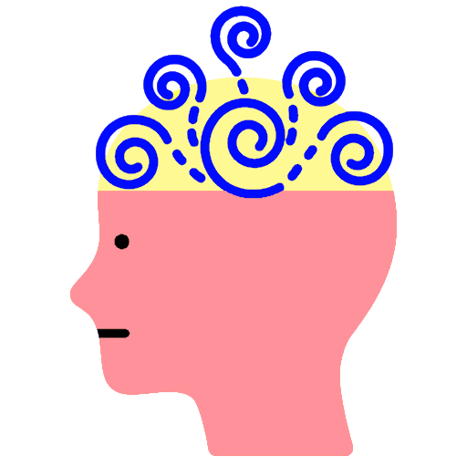
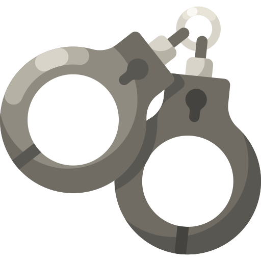

A Long Life
As a consequence of all the health benefits coffee provides, the consumption of coffee has been linked to a reduced risk of death.
Across 21 studies with over 10 millions participants, drinking 1 cup of coffee per day is reviewed to be linked to a 3% decrease chance of death, while drinking 3 cups would provide a 13% decrease chance of death. This is so regeardless if the cup of coffee is decaffeinated or caffeinated.
One study in particular observed 402,260 individuals aged 50-71 for over 12-13 years to find that at 4 to 5 cups of coffee per day, men had a 12% decrease chance of death and women had a 16% decrease chance of death.
On average, coffee drinkers live longer than non-coffee drinkers, with 4 to 5 cups per day being the sweet spot.

Reduce Cancer Risk
Studies have shown that both decaffeinated and caffeinated coffee is linked to a reduce risk of liver cancer. In a study performced surveying 18 cohorts, involving over 2 million people, 2 cups of coffee per day was found to result in a 35% reduction in risk of HCC, or primary liver cancer.
4 cups of coffee a day is also studied across 8 out of 21 cohorts to protect against post-menopausal breast cancer with a 10% reduction rate. It is also associated with a 20% reduced risk of colon cancer in women, compared to those who do not drink coffee.

Better Concentration & Higher Motabolism
Even though soft drinks, tea and chocolate contain caffeine, the largest source of caffeine is coffee. An average cup of coffee contains 90-100mg of caffeine. As a stimulant, caffeine is the most commonly consumed psychoactive substance in the world. It blocks adenosine to increase brain activity and releases norpinephrine and dopamine which decrases fatugue and increases one's levle of alertness.
Caffeine is able to provide a short-term boost in mood, reaction time, vigilance, brain function and general cognitive function, as well as a 3-11% boost in metabolism and a 11-12% boost in exercise performance.

Mental Wellness
The high levels of caffeine in coffee allows it to block adenosine in one's brain to release dopamine. One of dopmaine's key roles in the brain is motivation, reinforcement and reward. As such, dopamine is known as the "feel-good" hormone, since it is linked to the brain's reward system. Those afflicted by depression have a deficit of dopamine. While coffee cannot be considered a cure or even medicine for depression, it can be used to help alleviate the illness even if only slightly by increasing the levels of dopamine in the brain.
A study done of over 300 thousand people with more than 8 thousand people plagued by depression found that those who drank more coffee had a lower risk of depression. Specifically, 400ml of coffee is said to be the peak amount.
It is estimated that over 280 million people in the world suffer from depression. And more than 700 thousand people die due to suicide every year. If coffee can reduce the risk of depression, than it is truly a life saver.

And More...!
The list of coffee's benefits goes on and on. On top of everything already previously mentioned, coffee is shown to protect drinkers from Alzeheimer's and Parkinson's disease, with a 65% and 32-60% reduction in risk respectively.
A review of 18 studies of over 400 thousand people also showed that there is a 7% decrease in chance of type 2 diabete per daily cup of coffee. Type 2 diabetes accounts for 90-95% of diabetes cases in the world.
Coffee is also studied to lower the risk of developing cirrhosis by 84% from 4 or more cups of coffee per day.
A survey of over 83 thousand women suggests that coffee could even modestly reduce the risk of stroke in women. Coffee is also linked to a reduced risk of chronic kdney disease.

Anxiety & Disrupted Sleep
Too much of a good thing can be bad. Due to the high caffeine levels in coffee, too much coffee can cause jitteriness, anxiety, heart palpitations and even exacerbated panic attacks. Too much caffeine can cause overstimulation, especially in those sensitive to caffeine.
As part of these side effects, coffee could end up disrupting sleep if taken too late in the day. It is suggested to refrain from drinking coffee past 2:00pm.

Addiction & Withdrawal
As with most substances, regular consumption can lead to tolerance. The caffeine in coffee either stops working for the individual, or the individual takes larger doses in order to produce the same effects. Regular consumption can also result in a sense of dependency, where the individual is unable to get through the day without coffee.
When people abstain from caffeine after taking it regularly, they could get withdrawal symptoms that could last for a few days. Such symptomes include headaches, exhaustion, brain fog and irritability.
Be it tolerance or withdrawl, both are indications of physical addiction and over dependency.